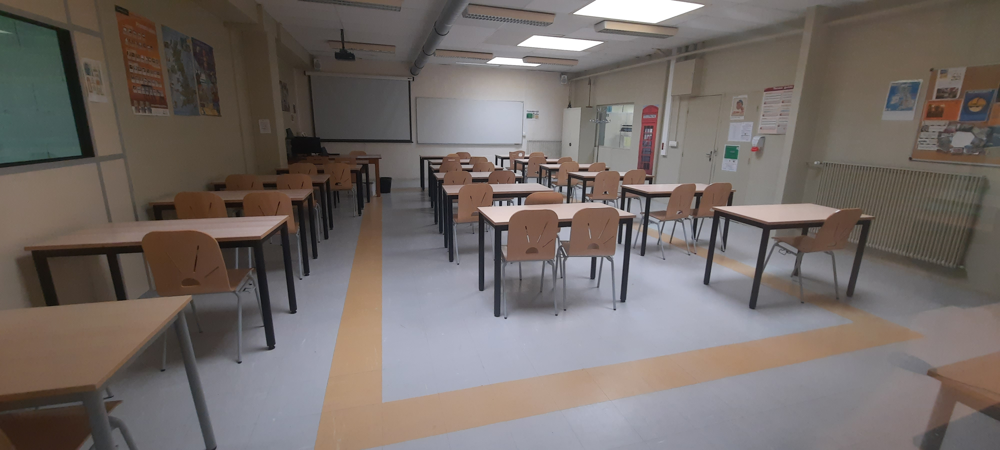
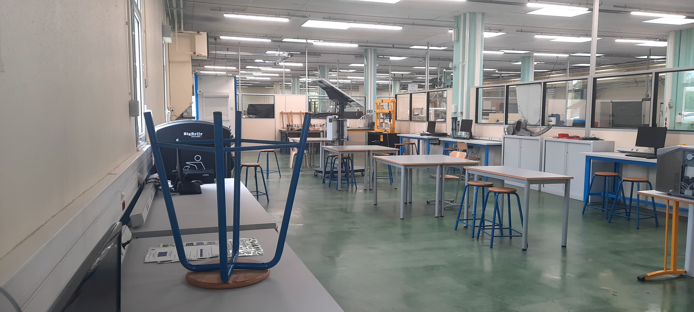
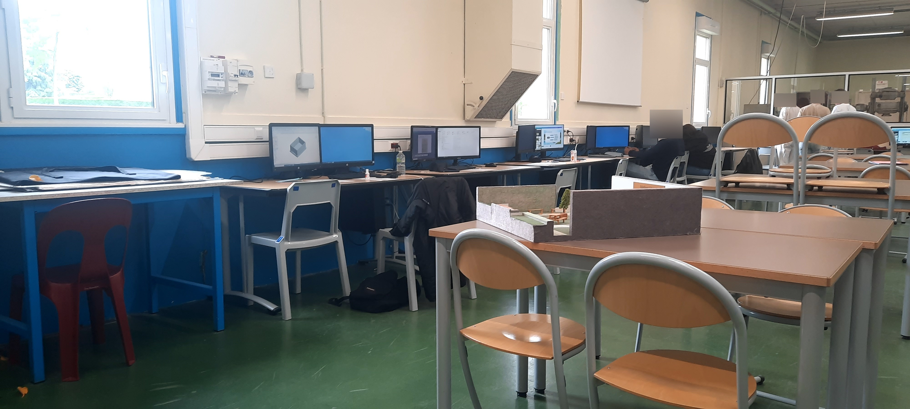

• ETLV (Enseignement Technologique en Langue Vivante)Cet enseignement est un cours alliant technologie, développement durable et anglais.
Le programme, s’articule autour de 6 axes :
------ Identités et échanges.------ Espace privé / espace public.------ Art et pouvoir.------ Citoyenneté et mondes virtuels.------ Fictions et réalités.------ Innovations scientifiques et responsabilité.

.• I2D (Ingénierie et Développement Durable)L’enseignement d'Ingénierie et Développement Durable se divise en 6 séquences axées sur une partie mécanique et numérique : ------ Justifier les choix technologiques dans un contexte de développement durable.------ Décrire le fonctionnement des produits.------ Analyse de la chaîne de puissance.------ Les comportements mécaniques.------ Analyse de la chaîne d'informations.------ Codage et traitement de l'information.

.• IT (Innovation Technologique)Dans l’enseignement Innovation Technologique, le travail en groupe est prédominant et permet d'aller plus loin
dans les réflexions, les principaux sujets abordés sont :
------ Découverte de la programmation de système d'acquisition de données en C++. ------ Etudes de systèmes mécaniques.

.• SI (Sciences de l'Ingénieur)L’enseignement des Sciences de l'Ingénieur s’articule autour de :
------ L'énergétique : les alimentations, les convertisseurs d'énergie, les appareils de protection et de commande. ------ L'automatique : l'acquisition, le traitement et la communication des informations.